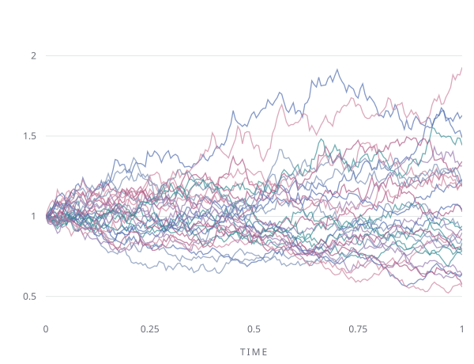

MATHEMATICS · FINANCE · CODE
Hello, I'mZiqing ChenStephen.
统计学 · 金融数学 · 量化研究
从统计模型到金融市场，探索投资组合风险、市场微观结构与衍生品定价。用严谨的研究与代码，将数据转化为可检验的投资洞见。
查看项目经历 ↗EXPLORING UNCERTAINTYFIG. 01

几何布朗运动dS = μS dt + σS dW模拟路径示意 · 非真实市场数据
我是 Ziqing (Stephen) Chen，本科就读于西交利物浦大学金融数学专业，硕士阶段为哥伦比亚大学统计学项目（2026 年 9 月至 2027 年 12 月，预计）。
我的实践经历涵盖 ETF 风险平价组合压力测试、基于流动性特征的股票相似度信号、利率期限结构建模，以及期权隐含波动率分析。研究中，我关注模型验证、计算效率和交易成本对策略表现的影响。
教育背景
哥伦比亚大学统计学文学硕士 · 2026.09–2027.12（预计）
西交利物浦大学金融数学理学学士 · 2022.09–2026.06
编程语言
PythonMATLABJavaSQLR
竞赛成果
Kaggle Optiver — Trading at the Close 银牌；Jane Street — Real-Time Market Data Forecasting 银牌。
以下为简历所述实习与研究成果；回测和模拟结果不代表实盘收益。
ETF 风险平价与压力测试
Quantrofin
量化研究实习生 · 纽约
- 为包含 5 只行业及宏观 ETF 的风险平价组合构建压力测试框架，结合滚动波动率、流动性代理指标、相关性失效和聚类市场状态，校准 2014–2026 年重大压力时期。
- 分析滚动风险贡献、尾部风险与回撤，并与 60/40 及纯股票组合比较，识别风险集中和配置不稳定问题。
- 搭建自动化 ETF 研究流程，处理日度数据、生成市场特征与压力情景。
ETFRisk ParityStress Testing
股票相似度与流动性因子
Shanghai Quantfund Investments Management Co., Ltd.
量化研究实习生 · 上海
- 将五特征 SIM 模型封装为可复用算子，支持 Roll spread、effective tick、Amihud、Amivest 与复合流动性信号。
- 实现分块欧氏距离搜索及市值加权邻居收益聚合，将内存复杂度从 O(N²) 降至约 O(chunk size × N)，保留精确最近邻选择。
- 在周度调仓与交易成本假设下，相比价格相似度及传统反转信号，Rank IC 提升 20%，净夏普比率提高 0.2。
SIMLiquidityNearest Neighbors
G-CIR 利率期限结构建模
中国太平洋保险（集团）股份有限公司
模型开发实习生 · 苏州
- 使用无迹卡尔曼滤波校准三因子广义 CIR 模型，数据覆盖 2010–2023 年中国国债周度收益率与 10 个期限（1 个月至 50 年）。
- 生成 1 年和 20 年期限的 1,000 条随机周度利率路径，并开展一年期压力测试。
- AAA 与 AA+ 信用曲线的 20 年模拟中，长期均值与波动率相对目标的偏差均在 10 个基点以内。
G-CIRUKFMonte Carlo
50ETF 期权波动率研究
Shanghai Guangyiwangda Private Fund Management Co., Ltd.
行业研究实习生 · 上海
- 基于 Python 构建上证 50ETF 期权隐含波动率曲面，按交易日对 18 个期权合约、6 个到期日进行动态参数校准。
- 使用近月与次近月期权构建滚动的中国 VIX 风格指标，衡量市场情绪。
- 结合波动率拐点、布林带和 RSI 设计波动率动量突破策略，2023 年回测胜率为 62%。
PythonImplied VolatilityOptions
Alpha 因子研究
WorldQuant Consulting (Beijing) Ltd.
顾问 · 北京
- 开发 34 个 Alpha 因子，平均夏普比率为 0.8，其中 2 个超过 1.5。
- 在 2023 WorldQuant Challenge 与 BRAIN Infinity Champions Alphathon 中获得 Gold 级别认可。
Alpha FactorsWorldQuant BRAIN
- OPTION PRICING
如何用 Python 实现 Black–Scholes 期权定价
待发布 - RISK MANAGEMENT
- QUANT RESEARCH
量化交易策略的回测陷阱
待发布